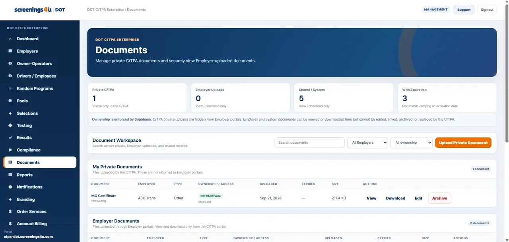
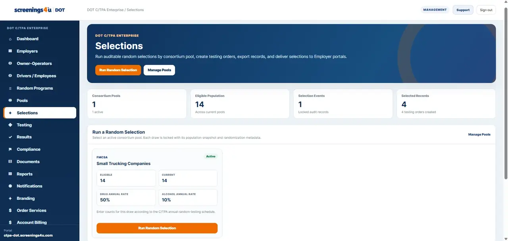

DOT Program Readiness Checklist
A practical starting checklist for agency coverage, workforce setup, testing operations, and recordkeeping.
Download checklists and worksheets, browse agency references, review operational playbooks, and jump into deeper articles when you need more detail.

Enter your email once to unlock the downloadable toolkit. These are placeholder resources for now, so the final PDFs can be replaced later without changing the page layout.
A practical starting checklist for agency coverage, workforce setup, testing operations, and recordkeeping.
Organize eligibility, pool maintenance, selections, completion tracking, and periodic program review.
Capture incident facts, document the testing decision process, and keep supporting records together.
A manager-facing observation worksheet for documenting objective workplace observations and escalation steps.
Bring new Employer clients into a C/TPA workflow with a consistent profile, roster, pool, testing, and billing setup.
Inventory people, program, testing, result, policy, random, and reporting records in one simple worksheet.
Use these resource paths to understand how the major pieces of a DOT program connect inside the operating workflow.

Keep eligible people, pool membership, selection events and resulting testing activity tied together.
Read the guide →
Understand the testing order lifecycle and how the reason for test, collection activity and status stay connected.
Read the guide →Organize documents and supporting records across people, programs, testing activity and client portfolios.
Read the guide →
Use reporting and history views to review activity, follow open work and preserve a clearer operating record.
Explore the platform →Each agency has its own regulatory structure and operating requirements. These pages connect the correct Workforce DOT workflow to the agency you manage.
CDL drivers and safety-sensitive CMV operations.
Open FMCSA hub → FAA14 CFR Part 120Covered aviation safety-sensitive employees.
Open FAA hub → FRA49 CFR Part 219Covered railroad service and regulated employee groups.
Open FRA hub → FTA49 CFR Part 655Covered transit safety-sensitive employees.
Open FTA hub → PHMSA49 CFR Part 199Pipeline covered-function personnel and programs.
Open PHMSA hub → USCG46 CFR Parts 4 & 16Marine employer and mariner testing workflows.
Open USCG hub →The resource center gives you the tools. The blog gives you the longer operational breakdowns behind the workflows.
Why organizing people, programs and workflows around the governing agency creates a cleaner operating structure.
Read article →Keep the eligible population, active pool and selection history aligned.
Read article →Connect the reason for test to the order, collection activity and final result record.
Read article →Organize files around the operational records they support.
Read article →Structure employer accounts, pools, reporting, billing and delivery from one portfolio view.
Read article →Reduce handoffs between people, testing, documents, selections, results and reporting.
Read article →These questions are based on currently published FAQ content in the screenings4u Supabase project.
Choose the service you need and continue through checkout. After the order is confirmed, you receive the information needed to complete the test. If you are unsure which service applies, contact the screenings4u team before ordering.
Yes. screenings4u coordinates testing through a nationwide collection-site network. Site availability varies by service and ZIP code, so the assigned or available location is confirmed as part of ordering and scheduling.
Many negative laboratory drug-test results are available within approximately 2–3 business days after the laboratory receives the specimen. Non-negative results, confirmatory testing, MRO review, shipping, weekends, holidays, or incomplete information can extend the timeline.
Under 49 CFR Part 40, DOT laboratories test for marijuana metabolites, cocaine metabolites, amphetamines, opioids, and phencyclidine (PCP).
FMCSA-regulated testing includes pre-employment controlled-substances testing and, when applicable, random, reasonable-suspicion, post-accident, return-to-duty, and follow-up testing.
Call (773) 245-7009 or use the contact page. For privacy and security, do not send sensitive test results or identification documents through ordinary email unless instructed to use an approved secure method.
Jump straight to the resource type you need next without digging through the entire site.